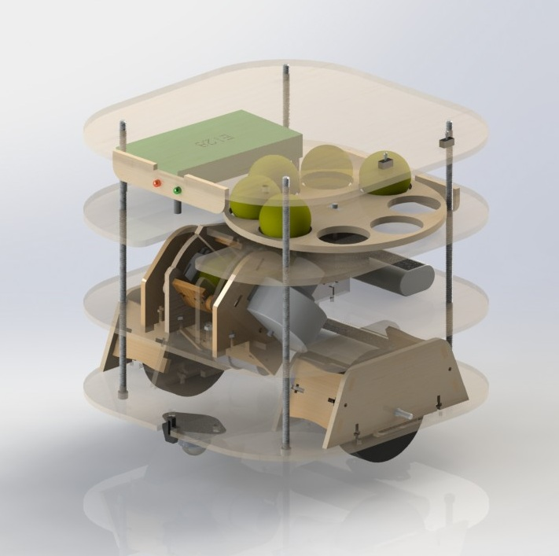
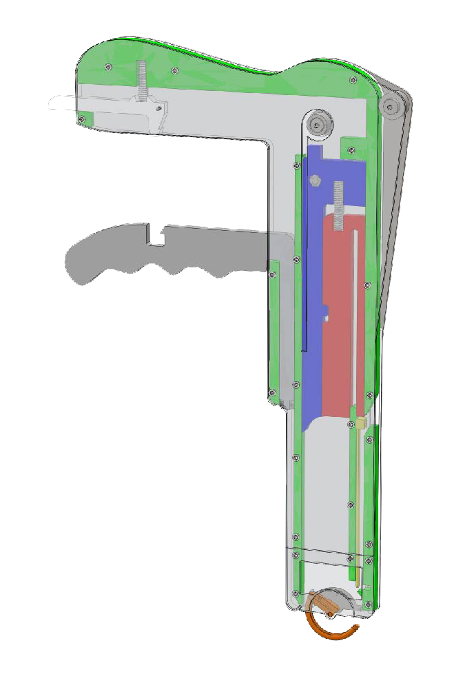

|
Projects
ME218: Smart Product Design (Stanford M.S. Depth 2012-2013)
Three-quarter, project-based graduate course on prototyping embedded systems.
Each quarter concluded with an intensive final project (often with a quirky theme) which was completed in teams of four:
|
 |
Interactive Arcade Game
Two player, Batman-themed game that pitted opponents against each other as they quickly hit flashing LED's.
Game startup included triggering an IR sensor with a 'secret code’ then arousing an accelerometer worn by the user as a 'warm up’.
website
video
Autonomous “Battleship” Competition
Constructed autonomous robot to navigate 10’x10’ playing field shooting opponent’s targets in a final tournament
website
video
Wirelessly Controlled Rover
Designed and constructed a remote-controlled robot to handle wireless commands using an event-driven software framework and a SPI communication network between PIC16F690 chips.
website
video
|
ME2.750: Precision Machine Design (MIT Fall 2011)
|
 |
I worked as part of a student team of five, advised by a surgeon, to develop the SutureTie, a hand-held device that used zip-tie sutures to occlude blood flow through discrete sections of the liver.
Our team ultimately produced a proof-of-concept prototype which was demonstrated on an ex-vivo, porcine liver.
The project provided experience defining functional requirements, combing through prior art, working with regular input from our assigned surgeon, and able to sit in on a liver resection.
poster presentation
|
|